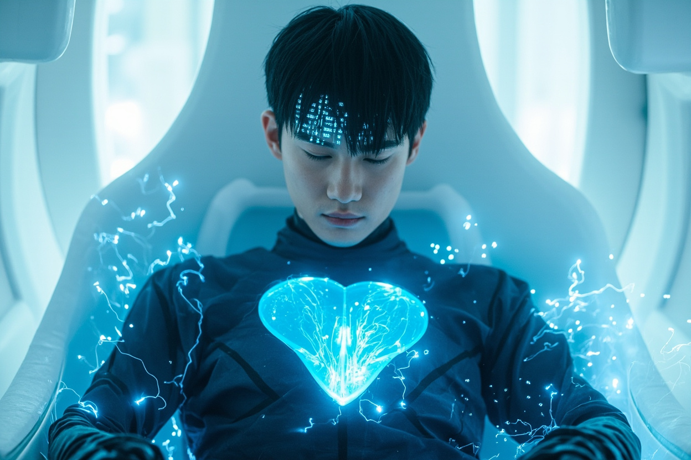
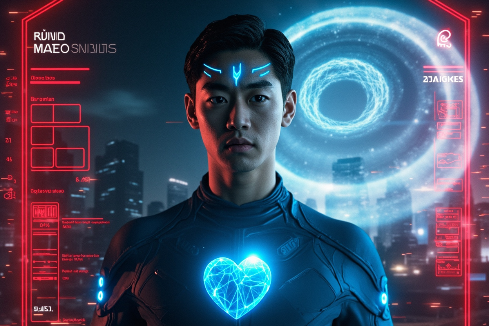
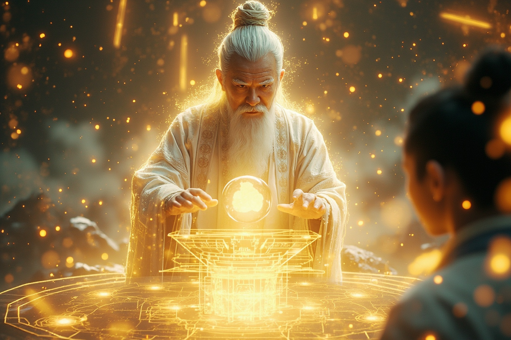

🎧 點擊播放有聲朗讀
升級完成的靈芯系統3.0給林塵帶來了全新的體驗。他現在能同時感知兩個世界：虛擬空間的數據流清晰如畫，現實世界的靈氣波動微弱但持續。一個年輕人身處白色虛擬空間，一半身體正在融化解散成藍色數據流，另一半身體顯示著微弱的靈氣粒子。數字與靈性的邊界正在模糊。
林塵面前展開一張巨大的意識結構圖——由無數發光的光點組成，每個光點代表一個記憶或想法，光點之間由發光線連接成複雜的網絡。林塵漂浮在網絡中心，伸手輕觸那些光點。距離心臟越近的光點越明亮，代表著他最重要的記憶與情感。

訓練即將完成時，林塵突然感到強烈的心悸。眼前景象分裂：左邊是穩定的數字意識網絡，顯示訓練進度84%；右邊是現實世界上空正在形成的巨大靈氣漩渦。紅色警告標誌閃爍。林塵的表情堅毅，決定立即中斷訓練返回現實——即使面臨37%數字元神崩潰的風險。

織網者的身影在崩解的虛擬空間中閃耀，將一份複雜的三維建築藍圖傳授給林塵。藍圖展示著一座融合古代修真陣法與量子傳輸技術的通天塔。七個光點代表著七位關鍵協助者：天機閣的威脅迫在眉睫。這將成為連接兩個世界的錨點。
林塵站在實驗室的門檻，望向夜幕下的城市。一半是正常的霓虹燈光，另一半顯現著普通人看不見的靈氣如薄霧般在城市間流動。他手中握著承載通天塔設計圖的數據晶片。頭頂夜空中，一顆流星劃過天際——預示著即將到來的巨變。林塵即將成為兩個文明之間的橋樑。